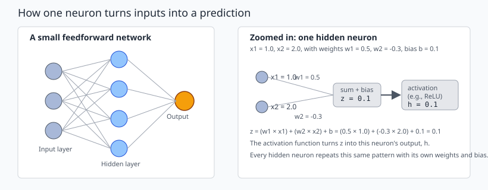
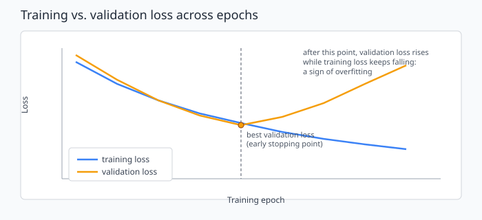
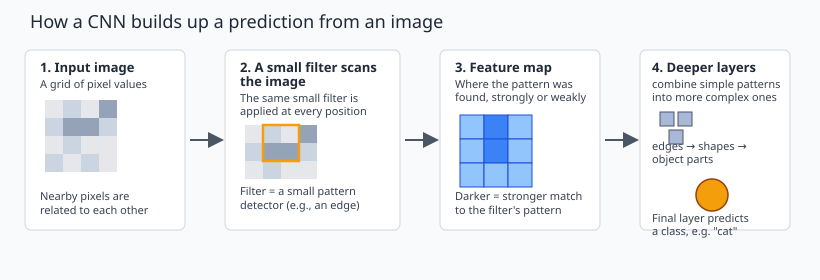

11 Neural Networks and Deep Learning#
Big Idea#
A neural network is one more modeling option, not an automatic upgrade. Before reaching for one, it helps to ask a direct question:
If we replace a familiar model with a neural network, what evidence would justify that choice?
You already know how to build and evaluate models with regression and decision trees, and in the last chapter you learned to ask whether a model’s decisions can be explained and trusted. This chapter adds a neural network to your toolbox, and shows how to decide, with evidence, whether the added complexity is worth using.
Note
A neural network is not guaranteed to perform better than a simpler model. It adds flexibility, and flexibility has to be justified the same way any other modeling choice is: with a fair comparison on held-out data.
11.1 Where Deep Learning Fits#
It helps to place a few terms in order before going further.
Artificial intelligence (AI) is the broad goal of building systems that perform tasks normally requiring human judgment.
Machine learning is one way to build AI systems: instead of writing explicit rules, the system learns patterns from data.
Neural networks are one family of machine learning models, loosely inspired by how biological neurons pass signals to each other.
Deep learning refers to neural networks with multiple hidden layers stacked together, which allows the network to build up more complex representations step by step.

Fig. 18 A small feedforward network (left) and a close-up view of how a single hidden neuron turns its inputs into an output (right).#
A neural network with one small hidden layer is a neural network, but it is not usually called deep learning. “Deep” refers to depth (multiple stacked hidden layers), not to how advanced or accurate the model is.
The history here is long, but the short version is enough for this course: the core ideas go back decades, and neural networks became practical for large, real-world problems only once enough data, computing power, and training techniques were available. Nothing about this chapter requires that history in detail.
11.2 How a Neural Network Makes a Prediction#
Use the diagram above as a reference while reading this section.
A neural network takes a set of input features, passes them through one or more hidden layers, and produces an output.
Input layer. Each input node holds the value of one feature for one observation, the same kind of feature you have already used in regression and tree models.
Weighted combination and bias. Every connection between an input and a hidden neuron has a weight, a number learned during training that controls how much that input matters to that neuron. Each neuron also has a bias, a learned number added to the combination. For a neuron with two inputs:
Here \(x_1\) and \(x_2\) are the input values, \(w_1\) and \(w_2\) are the learned weights, \(b\) is the learned bias, and \(z\) is the neuron’s weighted sum before activation.
Working through the example in the figure: \(x_1 = 1.0\), \(x_2 = 2.0\), \(w_1 = 0.5\), \(w_2 = -0.3\), and \(b = 0.1\). Then:
Activation function. The value \(z\) is passed through an activation function, which decides what the neuron actually outputs. Without an activation function, stacking layers would collapse into one big linear calculation, no matter how many layers you add. A nonlinear activation function lets the network represent curved, non-linear relationships, which is a large part of why networks can model complex patterns.
Two commonly used activation functions:
ReLU (rectified linear unit) outputs \(z\) when \(z\) is positive, and \(0\) otherwise. It is simple and widely used in hidden layers.
Sigmoid squeezes any input into a value between 0 and 1. It is often used at the output layer for binary classification, where that value can be read as a probability.
This chapter does not survey every activation function. ReLU and sigmoid are enough to understand the role activation functions play.
Hidden layers. A hidden layer is a group of neurons that each repeat this same pattern (weighted sum, add bias, apply activation) using their own learned weights and bias. Their outputs become the inputs to the next layer.
Output layer. The final layer produces the network’s prediction. Its shape depends on the task:
For a regression task (predicting a number), the output layer typically produces a single numeric value directly, with no activation function forcing it into a fixed range.
For a classification task (predicting a category), the output layer typically produces a score per class, often converted to something that behaves like a probability.
Not every network output should be read as a probability. Whether a value is a probability depends on the task and the output layer’s design, not on the fact that it came from a neural network.
11.3 How a Network Learns#
Training a neural network means finding weights and biases that make its predictions as good as possible. The process repeats four steps:
Make predictions. Pass a batch of training examples through the network to get its current predictions.
Calculate a loss. A loss function measures how far the predictions are from the actual values. Lower loss means the predictions are closer to correct.
Use backpropagation to calculate gradients. Backpropagation works backward through the network to figure out how much each weight and bias contributed to the loss, and in which direction adjusting it would reduce that loss.
Use an optimizer to update weights and biases. The optimizer uses those gradients to nudge every weight and bias slightly, aiming to reduce the loss next time.
This cycle repeats across the training data until the model stops improving by much, or until training is stopped on purpose.
A few terms are worth defining here, since they show up constantly in practice:
A learning rate controls how large each update step is. Too large, and training can bounce around without settling. Too small, and training can take a very long time to improve.
A batch is a small group of training examples processed together before the weights are updated once.
An epoch is one complete pass through the entire training dataset.
Two distinctions are easy to blur but worth keeping separate:
Loss vs. evaluation metrics. Loss is the quantity the optimizer is actively trying to reduce during training. An evaluation metric, such as accuracy or RMSE, is how you judge the finished model’s performance in terms that are meaningful to the problem. They are often related, but they are not always the same quantity, and loss is not usually reported as the final measure of success.
Backpropagation vs. the optimizer. Backpropagation computes how much each weight contributed to the error. The optimizer decides how to use that information to actually change the weights. No calculus derivation is needed here: the important idea is that these are two separate steps, not one.
11.4 Building a Trustworthy Comparison#
A neural network fits into the same evaluation workflow you have already been using. None of the following steps change:
Define the target you are predicting and the predictors available to you.
Split the data into training, validation, and test sets before fitting any preprocessing.
Fit scaling and other preprocessing using the training data only, then apply it to the validation and test data.
Establish a simple baseline and a familiar model (such as linear or logistic regression, or a tree-based model) before trying a neural network.
Train and tune the neural network using the training and validation data only.
Evaluate the final, tuned models on the same held-out test set, used once, at the end.
Why feature scaling often matters here. Many neural networks are sensitive to the scale of their inputs, because large input values can produce large weighted sums that make training unstable or slow. Scaling features to a similar range (for example, standardizing them) is a standard part of preparing data for a neural network, the same way it is for several other model types you have already used.
Using learning curves to spot overfitting. A learning curve plots loss (or another metric) on the training set and the validation set across training epochs. Early in training, both usually improve together. If training loss keeps improving while validation loss stops improving or starts getting worse, the model is overfitting: it is starting to fit patterns specific to the training data rather than patterns that generalize.

Fig. 19 Training loss keeps falling, but validation loss turns upward after a point. That gap is a sign of overfitting.#
Two common ways to respond to overfitting:
Early stopping halts training once validation performance stops improving, instead of continuing to the maximum number of epochs.
Regularization adds a penalty or constraint that discourages the network from fitting the training data too closely.
Neither technique is explored in depth here. The important habit is to watch both curves, not just the training curve, and to remember that the test set stays out of every tuning decision, exactly as with any other model.
11.5 When Is the Added Complexity Worthwhile?#
Return to this chapter’s opening question: what evidence would justify replacing a familiar model with a neural network?
The table below illustrates the kind of comparison that answers that question. The numbers are not measured results from a real dataset; they are included only to show what a comparison like this looks like and what it should make visible.
Illustrative example, not measured experimental results.
Model |
Validation accuracy |
Training time |
Stability across runs |
Explainability |
Practical notes |
|---|---|---|---|---|---|
Simple baseline (e.g., most frequent class) |
0.62 |
seconds |
very stable |
fully transparent |
useful floor for comparison |
Familiar model (e.g., logistic regression or random forest) |
0.84 |
minutes |
stable |
interpretable or post-hoc explainable |
often close to the neural network’s performance |
Small neural network |
0.86 |
tens of minutes |
can vary across runs |
harder to explain directly |
small gain here may not be worth the added cost |
Reading a comparison like this one means weighing several things together, not just the top accuracy number:
Predictive performance. How large is the actual improvement, and is it consistent, or could it be within normal run-to-run variation?
Training time and computational cost. A small accuracy gain that costs far more time and compute may not be worth it in practice.
Stability. Does retraining the same network with a different random seed give a similar result, or does performance swing noticeably?
Explainability. Revisiting the previous chapter: a harder-to-explain model is a real cost, not a neutral tradeoff, especially when a decision affects people directly.
Practical needs. Does the deployment environment support the extra complexity, and does the problem actually need it?
If you calculate real comparison numbers for a dataset in a future assignment, document the dataset and the exact procedure used, so the comparison can be checked and repeated. Numbers without that documentation should not be presented as measured results.
11.6 CNNs: A Brief Image Example#
Images have a property that plain feedforward networks do not take advantage of well: nearby pixels are related to each other, and useful patterns (edges, textures, shapes) can appear anywhere in the image. A Convolutional Neural Network (CNN) is designed around that structure.

Fig. 20 A CNN applies a small filter across an image to produce a feature map, then stacks layers so simple patterns combine into more complex ones.#
The key ideas, at a conceptual level:
A convolutional filter is a small pattern detector (for example, something that responds to a vertical edge) that is applied across the entire image rather than being learned separately for every position.
Because the same filter is reused across the whole image, the network can detect a pattern no matter where it appears, using far fewer learned parameters than if every pixel position needed its own separate weights.
Applying a filter produces a feature map, showing where in the image that pattern was found, and how strongly.
Successive layers build on earlier feature maps, so early layers tend to pick up simple patterns such as edges, while deeper layers combine those into more complex representations such as shapes or object parts.
The final layers use these representations to produce a prediction, such as a class label.
This chapter keeps CNNs at this conceptual level. You are not expected to implement a CNN, calculate output dimensions, or build a full image-processing pipeline here; this is meant to give you enough understanding to recognize what a CNN is doing and why it is a reasonable choice for image data.
11.7 Limitations and a Transition to Fairness#
Neural networks, including CNNs, come with real limitations worth keeping in view:
Data requirements. Neural networks, especially deep ones, often need more training data than simpler models to perform well and to generalize reliably.
Computational cost. Training and sometimes even running these models can require meaningfully more computation than a simpler model.
Distribution shift. A model trained on one population or time period can perform noticeably worse if the data it sees in practice looks different from its training data, a risk that applies to any model but is easy to overlook when a model’s accuracy numbers look strong.
Limits of explanation methods. The post-hoc explanation methods from the previous chapter can be applied to neural networks, but they describe the model’s behavior; they do not automatically reveal the real mechanism behind a prediction.
A few points are worth stating directly, because they are easy to lose sight of when a model performs well:
Good accuracy does not establish that a feature causes an outcome.
An explanation does not prove that a model is correct, or fair.
A strong overall accuracy number can still hide poor performance for a particular group of people, even when the model looks trustworthy on average.
That last point is where this chapter ends and the next one begins:
How should we evaluate who benefits and who bears the consequences of model errors?
Module 12 picks up that question directly.
Common misconceptions#
“Deep learning and neural networks are the same thing.” A neural network with one small hidden layer is a neural network, not deep learning. Depth is what makes a network “deep.”
“A neural network’s output is always a probability.” Whether an output behaves like a probability depends on the task and how the output layer is designed, not on the fact that the model is a neural network.
“A bigger or more complex network will perform better.” Added complexity is not automatically an improvement. It must be checked against a baseline and a familiar model, using the same held-out test set.
“Low training loss means the model is working well.” Low training loss combined with rising validation loss is a sign of overfitting, not success.
“An explanation proves the model is correct.” An explanation describes what the model paid attention to. It does not prove the model is right, or fair, as the previous chapter already established.
Self-checks#
A classmate says their network has three layers, so it counts as “deep learning.” What question would you ask before agreeing?
For the single-neuron example in this chapter, what would the output \(z\) be if \(x_1 = 2.0\), \(x_2 = 1.0\), \(w_1 = 0.5\), \(w_2 = -0.3\), and \(b = 0.1\)?
A model’s training accuracy keeps climbing while its validation accuracy flattens and then declines. What is happening, and what are two ways to respond?
You are comparing a random forest and a small neural network on the same task. The neural network scores slightly higher on the test set but performance varies noticeably between retrainings. What else would you want to know before recommending it?
Why might a CNN be a more reasonable default than a plain feedforward network for an image classification task?
Check your reasoning
Ask how many hidden layers the network has, not how many layers total. A network with one hidden layer is usually not called deep learning, regardless of how it is described informally.
\(z = (0.5 \times 2.0) + (-0.3 \times 1.0) + 0.1 = 1.0 - 0.3 + 0.1 = 0.8\).
The model is overfitting: it is fitting patterns specific to the training data that do not generalize. Early stopping and regularization are two standard responses, and checking the learning curves is how you would notice this in the first place.
Whether the gain is consistent across multiple random seeds, how it compares to training time and explainability costs, and whether the deployment context can support a less stable, less interpretable model.
A CNN reuses the same filters across the whole image, which fits the fact that useful patterns (edges, shapes) can appear anywhere in an image, and does so with far fewer parameters than connecting every pixel to every neuron directly.
Optional extension: why nonlinearity matters mathematically
If every neuron only computed a weighted sum with no activation function, stacking any number of layers would still produce, mathematically, just another weighted sum of the original inputs. No amount of depth would add new modeling power. Nonlinear activation functions are what allow stacked layers to represent curved relationships that a single linear model cannot. This extension is optional background, not required for the learning objectives above.
Key Takeaways#
A neural network is one modeling option among several. Added complexity needs to be justified with a fair comparison, not assumed.
A neural network builds a prediction from inputs, weights, biases, hidden layers, and activation functions. Nonlinear activation functions are what let the network represent non-linear relationships.
Training repeats four steps: predict, calculate loss, use backpropagation to find gradients, and use an optimizer to update weights and biases.
Parameters (weights, biases) are learned during training. Hyperparameters (learning rate, batch size, number of epochs, network architecture) are chosen by the analyst beforehand.
The same evaluation workflow used for other models still applies: split data first, fit preprocessing on training data only, compare against a baseline, and evaluate once on a held-out test set.
Learning curves showing training loss falling while validation loss rises are a sign of overfitting. Early stopping and regularization are two standard responses.
CNNs apply shared filters across an image to detect patterns regardless of position, and stack layers so simple patterns combine into more complex representations.
Good accuracy does not establish causality, an explanation does not prove correctness or fairness, and strong overall performance can still hide poor performance for a specific group, which is where the next chapter picks up.
References#
Goodfellow, I., Bengio, Y., and Courville, A. Deep Learning. MIT Press. Chapter 1, “Introduction.” https://www.deeplearningbook.org/contents/intro.html
Artasanchez, A., and Joshi, P. Artificial Intelligence with Python, 2nd ed. Packt Publishing. Chapter 1, “Introduction to Artificial Intelligence.”
Artasanchez, A., and Joshi, P. Artificial Intelligence with Python, 2nd ed. Packt Publishing. Chapter 20, “Deep Learning with Convolutional Neural Networks.”